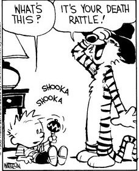

Right now.
It’s terminal.
Of course we’ve all been dying since the minute we were born.
There’s always been a built-in expiration date. Nothing alive on this planet is built to last.
Talk about planned obsolescence.
Despite this, wacky humans insist we can keep death away for as long as possible, based on our “choices.”
“By the power of this parsley sprig and this 5k run, I shall stave off death.”
Gosh the power and arrogance of little ol’ us.
As if any human action can keep away death if it’s ready for us.
As if just by having a “life expectancy,” we'll force existence to keep us around longer than it wants.
Y'know, just by expecting it.
And as if death is “premature” if it happens before our plans say would be acceptable. Like we’re owed any particular amount of time.
Meanwhile, we all know people who made all the right choices and still died before their 45th birthday.
Existence said, “Now’s the time,” and boom, outta here. No matter how old, how much yoga, or what strategies were tried.
Nothing premature about it, as far as life is concerned.
Still humans persist in the belief that we cause life to stay or go.
Because y'know, self-importance.
Importance Of Self.
Death is the apparent ultimate end of the self story.
Which is why it's feared most desperately.
And why everyone tries tries tries very hard to keep the body alive.
We think it's what we are.
So the body must carry on or else we disappear.
The thing is, what if humans have had that wrong all this time?
I mean, what if what we are is not physical, not blood, skin, muscles or cells of a body?
That would be weird, wouldn't it?
Because what are we, then?
And where?
Since, without "body-as-me," there’s no… place. No location.
No here, no there.
That would mean we’re everywhere.
Which would mean, dead or alive, we’re not going anywhere.
Y’know, being everywhere already and all.
Oh yeah. Weird.
I mean, wouldn’t it be something if it turned out that, without the perpetuation of the self story,
And without the smallness of the body’s limits...
That LIVING FOREVER thing that humans been so earnestly wanting for millennia…
the LIVING FOREVER thing that has caused us to make up immortal vampires and ghosts and highlanders, just so we can pretend we never die...
could be exactly what actually
already happens.
That would make body-death a non-event.
Since what we really are has never been alive to begin with.
With or without fangs.
There is amazing peace in surrendering to the truth of this.
Not to mention sudden whooo-hooo freedom from avoidance of potato chips and cigarettes, from spirulina and kombucha and sit ups,
and from the carefulness of entire lives dedicated trying to make the body survive.
Could it be there’s nothing left to be afraid of?
Talk about unfamiliar.
A whole new way of experiencing life.
Uncontained.
Unbound.
Un-Selfed.
Un-alive, and un-dead.
The complete
and total opposite of
terminal.
"You can't lose what you are." --John Troy
"Death has nothing to do with going away.
The sun sets
The moon sets
But they are not gone."
--Rumi
to get your Mind-Tickled every week.
Click here to see Judy on Buddha at the Gas Pump
Watch Judy and Robert Saltzman chat here
